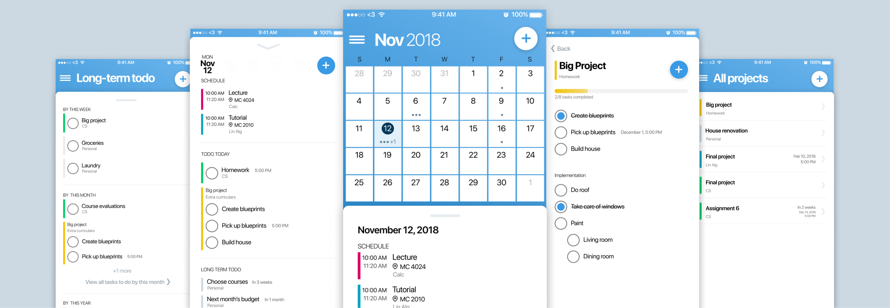
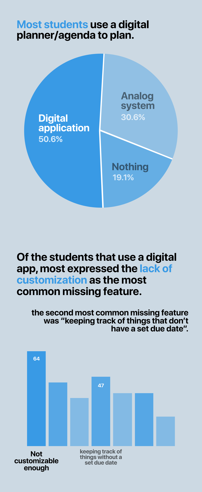
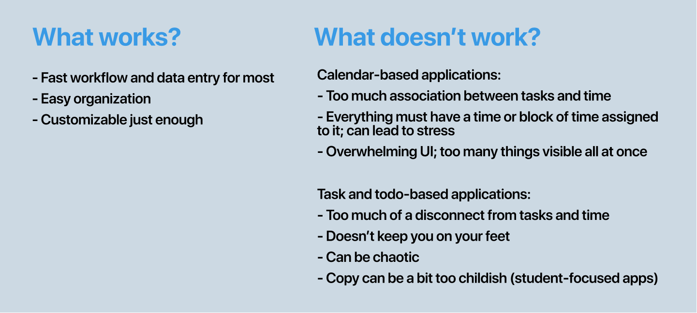
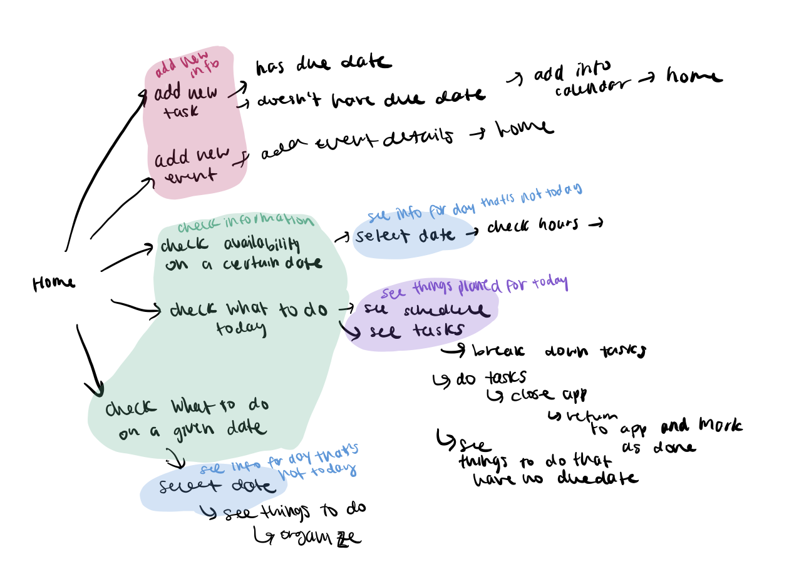
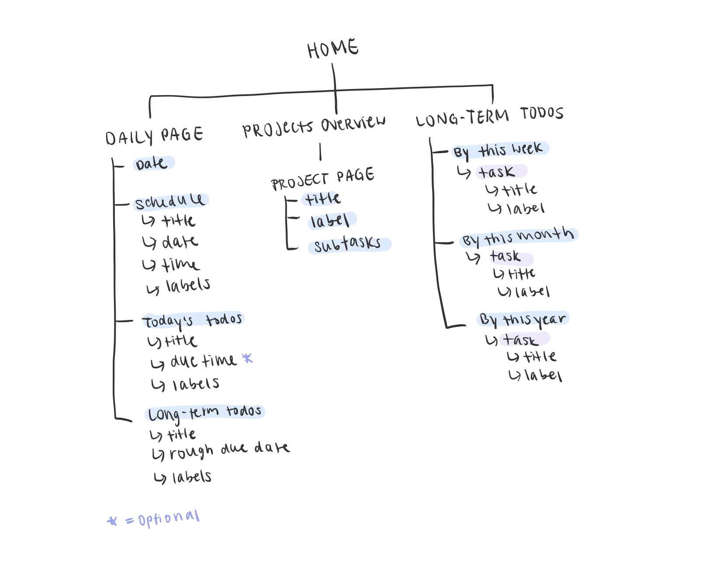
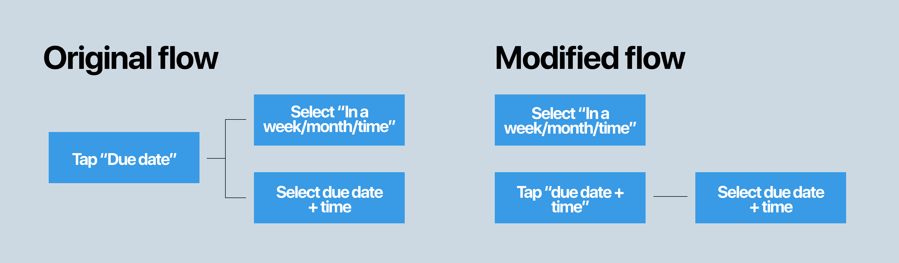

Planify is an all-in-one agenda + planner + project management application.
At my most recent co-op, I had the opportunity to work on a passion projects one day a week. Based on my personal need for a reliable planner/agneda application, I decided to design this!
Live Figma prototype available here
When I first started university, two pieces of advice that I heard the most were: 1) What worked for you in high school might not work for you in university, and 2) Keep an agenda!
In high school, I’d used a paper agenda, but as university life kicked in and schoolwork, events and interviews started piling up, I quickly realized that I needed a more flexible, smarter agenda/planner.
In the efforts to find a solution to my ever-growing pain of not being able to plan out my life, based on recommendations from friends and blogs, I tried out several different digital and analog systems including: bullet journaling, Google calendar, iCal, MyHomework, MyStudyLife and Trello, to name a few.
While some of these solutions worked, I found myself using a combination of two (or more) different apps/systems to achieve the workflow that I desired. (Currently, I’m using a combination of Trello, Google calendar and iCal)
This inspired me to design an app that would be flexible and smart enough so I wouldn’t have to keep switching between two or more apps.
Since the idea for Planify came directly from personal need, I wanted to see if this was a problem for other students as well. With the help of some help, I surveyed over 330 students and asked them about their planner/agenda system, what they liked and disliked.
Here are some of the results from the survey:
Earlier I mentioned that I had tried out some methods that my friends swore by. Since I was designing my own, I wanted to see what made each of them so appealing to my friends. In particular, I studied how other applications organized, stored and displayed their content, the general workflow, and what worked and didn’t work. I chose to study Google Calendar (calendar-based), Trello (todo-list/project management based) and MyHomework (student focused).
Here were some of the takeaways:
After having done my research, I established some goals that I hoped to establish with my design:
I sketched out a rough flowchart which became a basis for the pen and paper wireframes:
I also planned out the information architecture and decided what could go on each page
I wanted to make this product as gesture-friendly as possible to give users a sense of movability. This was especially important to me because as the name suggests, a planner is used to plan, not set things in stone. To achieve this, from the earliest stages, I decided to go with a card-based approach, to encourage users to move things around like they would be able to with post-its.
I chose blue as the primary colour since psychologically, it’s an “intellectual” colour associated with productivity. I went with San Francisco for the main display font to give it a familiar look (since I was designing for iPhone because it’s the phone I had which made testing easier)
I tested my designs to validate my assumptions and decisions. I made interactive prototypes on Figma and conducted a series of user interviews. I recorded what worked and didn’t work, and what people liked and didn’t like.
One challenge that people had was discovering how to set a task without a fixed due date. This was because to do so, they would have had to tap the due date settings before choosing the time frame they wanted. I fixed this by placing this option outside the “choose date” modal.
I also A/B tested a couple of designs.
This was my first case study ever, and so I learned a lot of things along the way. I learned how to ask meaningful questions during user testing, and do comparative analysis.